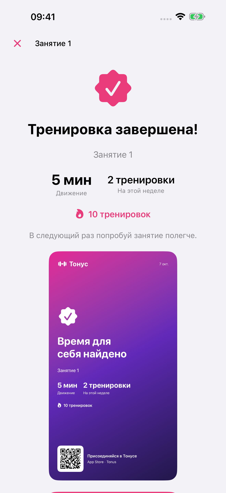
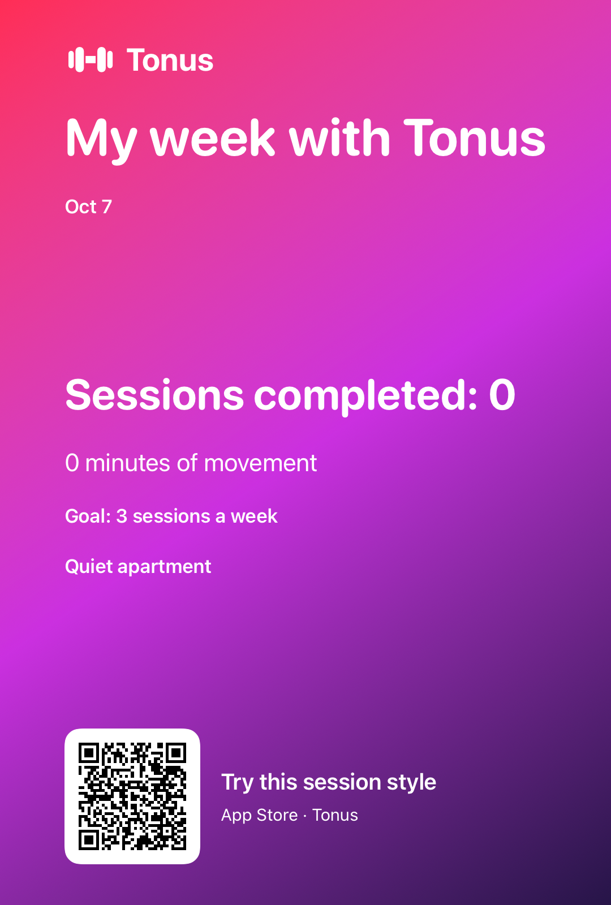

Por Nikita Revin, desenvolvedor do Tonus · 27 de outubro de 2026
Confira a imagem de uma sessão ou da semana, veja quais dados aparecem e escolha o destino antes de enviar pelo iPhone.
O Tonus prepara uma imagem quando você compartilha o resultado de uma sessão ou o resumo da semana. Antes de escolher o destinatário, confira quais números aparecem na imagem. Você também pode sair da tela de compartilhamento sem enviar nada.
Compartilhe uma sessão depois de salvar o resultado
- Conclua o treino e confirme a avaliação de dificuldade para salvar a sessão.
- Na tela de treino concluído, confira o nome, os minutos e o contador da semana.
- Toque em Compartilhar meu resultado.
- Escolha uma opção na tela de compartilhamento do iPhone e confira o destino antes de confirmar o envio.
A imagem inclui o nome da sessão, a data, os minutos registrados e o número de treinos da semana. Ela também pode mostrar uma medalha e o progresso da jornada, quando esses elementos estão disponíveis. O QR code leva à página do Tonus na App Store.

Se você terminar a sessão e preferir guardar o resultado só para si, feche a tela pelo botão de conclusão. Compartilhar é uma ação opcional, feita depois de o treino ser salvo.
Prepare o cartão da semana
Na tela Início, encontre o bloco Esta semana e toque em Compartilhe minha semana. O Tonus monta um cartão com a quantidade de sessões concluídas, os minutos registrados e a meta semanal. Quando há um estilo de plano flexível selecionado, o nome desse estilo também pode aparecer.
O resumo usa os treinos que estão no histórico da semana atual. A meta indica quantas sessões você pretende fazer; ela não significa que todas já foram concluídas. Confira os números antes de enviar, principalmente se você acabou de ajustar a meta.

Para entender como consultar os registros que entram nesse resumo, abra o guia do progresso semanal. Se quer repetir uma sessão, o caminho fica em Favoritos e repetição de treinos.
Veja quais dados saem na imagem
Os cartões de resultado e da semana mostram os campos descritos acima. Eles não incluem frequência cardíaca, peso corporal ou a lista completa do histórico. O compartilhamento também inclui um link para o Tonus na App Store.
Mesmo sendo um resumo, a imagem revela que você usa o app e mostra dados das suas sessões. Confira a prévia e escolha o público com quem deseja dividir essas informações. Depois de confirmar o envio em outro aplicativo, esse serviço passa a tratar o conteúdo conforme as próprias regras.
A conexão com Apple Saúde continua sendo uma escolha separada. Você não precisa autorizar o acesso a Saúde para consultar o histórico local ou preparar um cartão com os treinos salvos no Tonus.
Confira a imagem e o destino antes de enviar
Leia o nome da sessão, a data e os contadores na prévia. Se abrir o resumo semanal, confira se é essa semana que quer compartilhar. Uma imagem já enviada não se atualiza quando você conclui outro treino.
Na tela de compartilhamento do iPhone, as opções dependem dos aplicativos e recursos disponíveis no aparelho. Abrir essa tela não publica automaticamente em uma rede social. Para desistir, feche-a sem confirmar um destino.
O link e o QR code ajudam outra pessoa a encontrar o aplicativo. Eles não dão acesso ao seu histórico e não enviam uma cópia do seu plano para o iPhone dela.
Este guia descreve o Tonus 1.4 para iPhone com iOS 17 ou posterior. O acesso é gratuito, sem cadastro, assinatura ou compras no app. Planos e instruções escritas funcionam offline; vídeos online precisam de conexão, e serviços externos podem mostrar anúncios.